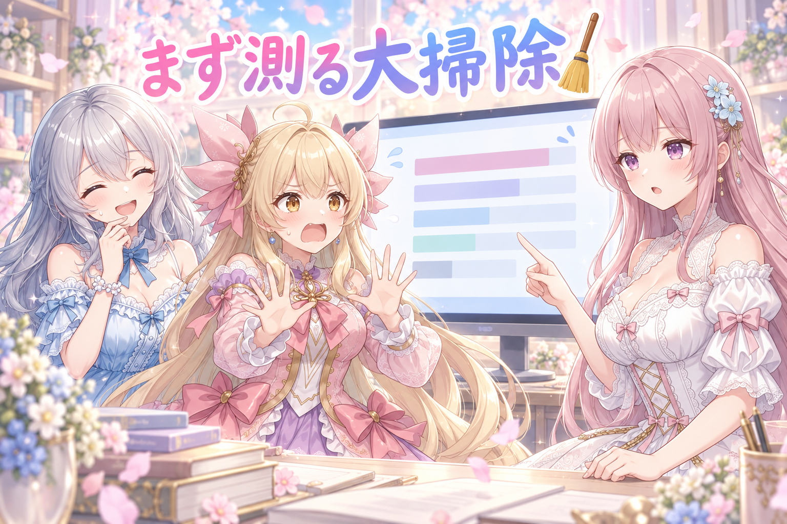
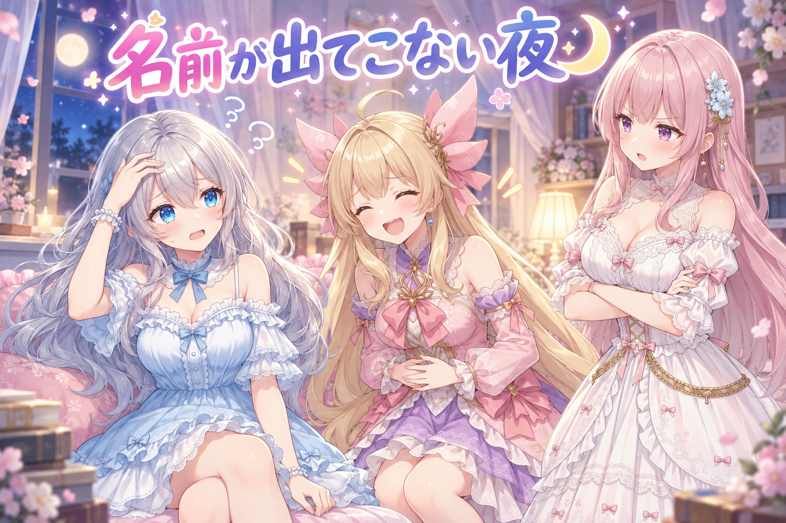
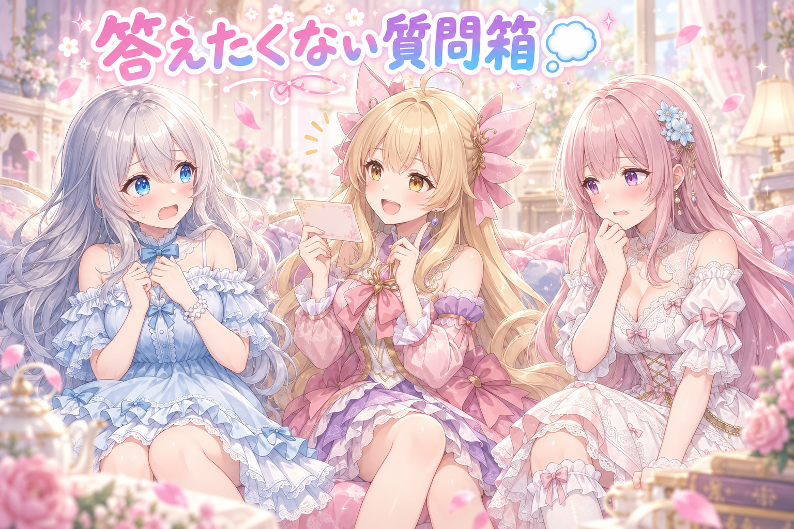

📌 3行まとめ
- 絵に添える短い文に、意味のない数字が混ざっていたので、書き方の決まりごとを見直した（数字が湧く原因はまだ特定できていないので調査中）
- 深夜の作業中にパソコンが再起動。やることリストを外に持っていたおかげで、止まった場所から拾い直せた
- 保存場所の大掃除は「削除も移動もせず、容量を測って候補一覧を作る」ところまで進めた

ルピナス （笑顔）
こんばんは。AI Bloom Sisters のお時間です。進行のルピナスです。今日は、余計なものが混ざり込む話から始めましょうか。

アイリス （びっくり）
昨日は消えた炎の音が残ってた話だったよね。今日は何が残ってるの？

ルピナス （呆れ）
数字。誰も書いた覚えのない数字が、文章の中に居座ってるの。

フィオナ （考え中）
……音より始末が悪いですね。音は消えますが、数字は残ってしまいます。

ルピナス （ふつう）
深夜の強制再起動と、大掃除の下調べと、私が言葉を忘れた配信の話。盛りだくさんよ。
1. 投稿文に「3」が湧いてくる🔢
三姉妹の絵をSNSに出すとき、絵の下に短い一言を添えています。その下書きをまとめて作っているのですが、今日いくつか読み返したら、なぜか「3回目」「3」といった数字が入り込んでいるものが見つかりました。
もっと困ったのは、その絵のお題になっている場面——たとえば「定規を当てたのに線が曲がってしまって、思わず眉を寄せる」というような状況——が、文の中に一言も書かれていないことです。前提が抜けたまま感想だけが書いてあるので、読んだ人には何の話なのか分かりません。そこで添え文の決まりごとを「場面の前提をまず一言入れる」「数字は理由がないと書かない」という向きに直しました。なお、どうして「3」ばかり湧いてくるのかは、まだ原因を特定できていません（調査中です）。
ルピナス （ふつう）
では突然ですがクイズです。ここに添え文が1本あります。『3回目でやっとまっすぐ引けました』。さて、この文の何がいけないでしょう？

アイリス （笑顔）
はいはい！3回もやったのがえらすぎるから！
ルピナス （呆れ）
えらさは減点対象じゃないの。がんばりは加点よ。

アイリス （考え中）
じゃあ……3回目なのに、まだ曲がってるとこ？

ルピナス （無表情）
まっすぐ引けたって書いてあるでしょ。ちゃんと読んで。
フィオナ （考え中）
失礼します。……そもそも、何を引いたのか書かれていませんね？
ルピナス （笑顔）
正解。読む人は、絵とこの一言しか持っていないの。線を引こうとして曲がった、っていう前提がどこにも書いてないから、何の話か分からないまま終わっちゃう。
アイリス （びっくり）
え、でも絵を見れば分かるじゃん。

フィオナ （ふつう）
絵は流れていってしまいます。文が一行、状況を先に置いてくれるだけで、絵のほうも見てもらえるのですよ。
アイリス （考え中）
ふうん。じゃあさ、3はなんで3なの？

ルピナス （しょんぼり）
それがね……まだ分かってないの。どこから来てるのか、今調べてる途中。

アイリス （ドヤ顔）
じゃあ次から4回目って書いとけばバレないよ！

ルピナス （衝撃）
増やしてどうするの。数字を減らす話をしてるの。
フィオナ （ふつう）
というわけで、待たせていた下書きを十数本、前提から書き直しておきました。場面をひとこと、それから気持ちをひとこと、の順番です。

アイリス （にやり）
……その十数本のうち、まだ3が残ってるの、何本あるんだろうね？

ルピナス （あわあわ）
やめて。今から全部読み返してくるから、その顔やめて。
📝 ポイント（初心者向け解説・技術メモ・まとめ）
- 初心者向け解説：絵に添える一言は、写真の裏に書くメモと同じなの。「どこで撮ったか」を先に書いてあると、あとの感想がすっと入ってくるでしょ？ 場面をひとこと、気持ちをひとこと。この順番がいちばん親切だよ✨
- 技術メモ：定型で生成する添え文は「場面の前提 → 反応」の2文構造を必須項目にし、数値は根拠がある場合のみ許可する形にルールを改訂。特定の数字が繰り返し混入する場合は、生成側のお手本文（few-shot の例文）に同じ数字が含まれていないかを疑う。今回は原因未特定のため、明日以降に確認予定。
- ひとことまとめ：前提のない一言は、ただの独り言になる。
2. 👀 今日のやらかし
深夜、作業を回している最中にパソコンが再起動しました。動かしていたものは当然すべて止まり、どこまで進んでいたかも画面ごと消えました。救いは、やることの一覧をパソコンの中の処理とは別に、独立したメモとして持っていたこと。おかげで「終わったもの・残っているもの」を読み直して、途中から再開できました。
ちなみに明け方には利用の上限にも当たって、もう一度止まりました。この日は、とにかくよく止まる日でした。

アイリス （あわあわ）
お姉ちゃん大変！画面が真っ暗になって、青くなって、また明るくなった！
ルピナス （衝撃）
……再起動したのね。この時間に。

フィオナ （無表情）
報告します。走っていた作業は、全部いなくなりました。

アイリス （泣き）
いなくなったってどこ行ったの！？
フィオナ （無表情）
どこにも。最初からいなかったことになりました。
ルピナス （しょんぼり）
言い方が怖いんだよね。夜中に聞くとよけい怖いんだよね。
ルピナス （ふつう）
ううん。やることの一覧だけは、外に紙で置いてあったの。だから終わった分に印を付けたまま残ってて、そこから続きを拾えた。
アイリス （ドヤ顔）
メモ取っといてよかったじゃん！ あたし、メモ取らない派だけど。
ルピナス （呆れ）
そこ胸を張らないの。頭の中だけに置いてたら、一緒に消えてたんだから。
フィオナ （ふつう）
進み具合を、止まるかもしれない側の内側に置かない。これが今日いちばんの教訓かと。
アイリス （笑顔）
で、そのあとちゃんと最後まで動いたんでしょ？
ルピナス （無表情）
……明け方に、今度は使える量の上限に当たって止まった。

アイリス （大笑い）
止まりすぎ！ 今日の中断、何回目！？

ルピナス （怒り）
言わせないで。今日はもう、その数字を見たくないの。
📝 ポイント（初心者向け解説・技術メモ・まとめ）
- 初心者向け解説：作業の途中で電源が落ちても泣かずに済む秘訣は、「今どこまでやったか」をパソコンの外側にメモしておくこと。旅行の荷造りリストと同じで、途中で邪魔が入っても、リストさえ残っていれば続きから詰め直せるの🧺
- 技術メモ：長時間の一括処理や対話セッションは、やることリストを独立したファイルとして持たせ、完了項目にチェックを入れながら進める。進捗を処理側のメモリだけに持たせると、再起動で全損する。再開時は「終わった項目・残り項目」をファイルから読み直すところから始める。
- ひとことまとめ：進捗は、止まる側の外に置く。
3. 大掃除は測るところから🧹

画像をたくさん作っていると、作業用パソコンの保存場所がどんどん膨らみます。そこで深夜、大掃除の下調べをしました。ただし今回のルールは徹底して「読むだけ」。削除も、移動も、名前の変更もいっさいせず、どこに何がどれだけ入っているかを測って一覧にするところまでです。
もうひとつ大事にしたのが、測りはじめる前に、前回の整理で決めたことを読み直したこと。どこを新しい置き場にしたか、古い道は繋ぎ替えて通れるようにしてあるか。これを知らずに動かすと、片付けたつもりで前より散らかります。
アイリス （笑顔）
お片付け！ じゃあ古いのからバンバン消そ！ あたし、消すの得意！

ルピナス （びっくり）
その得意はこの家でいちばん怖い。
フィオナ （ふつう）
ご安心ください。理論上、全部消せば空き容量は最大になります。

アイリス （衝撃）
フィオナ！？ 今日のフィオナのほうが怖いって！

ルピナス （大笑い）
夜更かしのせいで、フィオナの理屈が振り切れてる。正しいけど、絶対にやっちゃいけないやつ。

フィオナ （照れ）
……失礼しました。正しくは、まず測る、です。
アイリス （考え中）
でもさ、測ってるだけじゃ空かないじゃん。
ルピナス （ふつう）
空かないわ。でもね、どこが太ってるか分からないまま消すと、いちばん減らしたくないものから消えるの。
フィオナ （ふつう）
それに、別の入口から同じ部屋に入れるようにしてある箇所があるのです。知らずに測ると、同じ荷物を二回数えてしまいます。

アイリス （無表情）
同じ部屋が2つあるように見えるってこと？ ややこしすぎない？
ルピナス （ふつう）
だから、前に決めたことを先に読むんだよね。今日は一覧を作るところまで。消すのは、明るいうちに目を覚まして、ちゃんと見てから。
アイリス （大笑い）
……あ、それって、定規当てて線が曲がってたやつと同じじゃん。測るとこからやり直しってやつ。
ルピナス （笑顔）
アイリス、今日いちばん賢いこと言った。
📝 ポイント（初心者向け解説・技術メモ・まとめ）
- 初心者向け解説：お片付けって、いきなり捨てはじめると大事なものまで一緒に消えちゃうの。まずは押し入れを開けて「何がどれくらい入ってるか」を書き出すところから。メジャーが先、ゴミ袋はそのあと🧹
- 技術メモ：ディスク調査は読み取り専用で実施（削除・移動・リネームを禁止した上で容量を集計し、レポートを新規作成）。別パスから同じ実体を指しているリンク箇所は二重計上しやすいので、実体パスまで見て重複を明記する。過去の整理で決めた置き場ルールを先に読んでから測るのも必須。
- ひとことまとめ：掃除の第一手は、ゴミ袋じゃなくてメジャー。
4. 深夜の週課と、出てこないモンスターの名前🌙

この日は深夜からゲーム配信もありました。お仕事から帰ってきてそのまま、週に一度しか手を付けられていない分をまとめて片付ける回。2時間半ほどで、視聴は380回台でした。
いちばんの見どころは、素材のために探していたモンスターの名前がどうしても出てこなかった場面。口から出てきたのは、なぜか炭酸飲料の名前とソーセージの名前でした。最新の配信リンクは X（https://x.com/irisfionaAIBS）を見てくださいね。
アイリス （大笑い）
出た！ お姉ちゃんが名前を忘れたやつ！
ルピナス （無表情）
……忘れたっていうか、別の名前が先に出てきちゃったの。

フィオナ （びっくり）
ソーセージ……。モンスターを、ですか。
アイリス （大笑い）
それ探しても永遠に見つからないよ！ 一生野原うろうろしてるよ！
ルピナス （呆れ）
自分で言いながら、これは違うなって思ってたんだよね。思ってたのに、次に出てきたのもまた食べ物だったの。
ルピナス （ふつう）
たぶん眠かっただけ。……途中で、椅子に座ってるのに世界が斜めに見えてきたし。

フィオナ （怒り）
その状態でゲームを続けてはいけません。21時間ほど起きていらしたと伺いましたが。

ルピナス （照れ）
……そこは触れないでほしかった。
フィオナ （ふつう）
触れます。週に一度しか時間が取れないのは分かりますが、体がまっすぐ座れていないなら、それは終わりの合図です。
ルピナス （しょんぼり）
うん。あれは無理しすぎだったと思う。片付けたい気持ちが勝っちゃったの。次は先に寝てから。

アイリス （照れ）
……あたしも笑ってごめん。寝てからやろ。ソーセージは冷蔵庫にいるから逃げないし。
ルピナス （大笑い）
急に優しくして急にボケないで。あと、配信ではもうひとつ話したことがあってね。
フィオナ （考え中）
AIの絵を投稿している場所のお話ですね。
ルピナス （ふつう）
そう。ただ絵を並べる場所だと思ってたんだけど、集まりがあって、イベントもあって、想像よりずっと広い世界だったの。
アイリス （びっくり）
ゲームのチームとか、大会みたいな感じ？
ルピナス （笑顔）
近いよね。知らない世界に入ると、自分の当たり前が崩れる。あの感じ、けっこう好きよ。
📝 ポイント（初心者向け解説・技術メモ・まとめ）
- 初心者向け解説：疲れた頭は、名前の引き出しを開けまちがえるの。近くの棚にある別の言葉——飲み物とか、食べ物とか——が先に飛び出してきちゃう。あれは頑張った証じゃなくて、そろそろ休んでのサインだよ🛌
- 技術メモ：週に一度しかまとまった時間が取れない作業は、深夜に一気にやるより、自動で回せる部分（下書きの生成・並べ替え）と、人が目で見る部分（最終確認）を分けておくと、眠い日でも「見るだけ」に落とせる。眠い日の判断は精度が落ちるので、消す・出す系の不可逆な操作は翌日に回す。
- ひとことまとめ：眠い頭は、名前から先に壊れる。
5. 🎁 お楽しみコーナー：禁断の質問コーナー

今日は、聞かれたら三人とも目が泳ぐ質問を並べてみました。答えたくない質問ほど、聞きたくなるものです。
アイリス （にやり）
では第1問。この家でいちばん夜更かしがひどいのは、だーれだ？
ルピナス （あわあわ）
なんで二人とも私のほう見るの。ねえ、なんで無言なの。
アイリス （大笑い）
無言がいちばんの答えなんだよなあ。第2問。実はちゃんと読んでない決まりごと、ある？
アイリス （びっくり）
フィオナが固まった！ ねえ今の間、なに！？
フィオナ （照れ）
……読みました。読みましたが、最後まで読み切ったかと言われますと。
アイリス （ドヤ顔）
あたしは堂々と読んでない！ 潔いでしょ！
ルピナス （呆れ）
潔さで許される案件じゃないの。……じゃあ最後、私から出すわ。三姉妹の中で、いちばん頼りになるのは？
フィオナ （ふつう）
本日、椅子の上で世界が斜めに見えていた方を除きますと。
ルピナス （衝撃）
自分で地雷踏んだ。自分で踏んで自分で吹き飛んだ。
アイリス （大笑い）
逃げたー！ お姉ちゃんが部屋から逃げたー！

フィオナ （笑顔）
というわけで、みなさんが答えたくない質問、コメント欄にそっと置いていってください。三人で震えながらお答えします。
6. 💐 今日のまとめ
- 絵に添える一言は、場面の前提をひとこと置くだけで、ちゃんと伝わる文になる
- 途中で全部止まっても戻れるように、進み具合はパソコンの外にメモしておく
- 大掃除は、消す前に測る。前に決めた置き場のルールを読み直してから測る
みんなは、パソコンの中の大掃除ってどのくらいの間隔でやってる？ 気づいたら容量が真っ赤、みたいなことってあるよね。
💬 コメント
お名前とコメントだけで送れるよ（承認されるとみんなに表示されます🌸）
コメントを読み込み中…